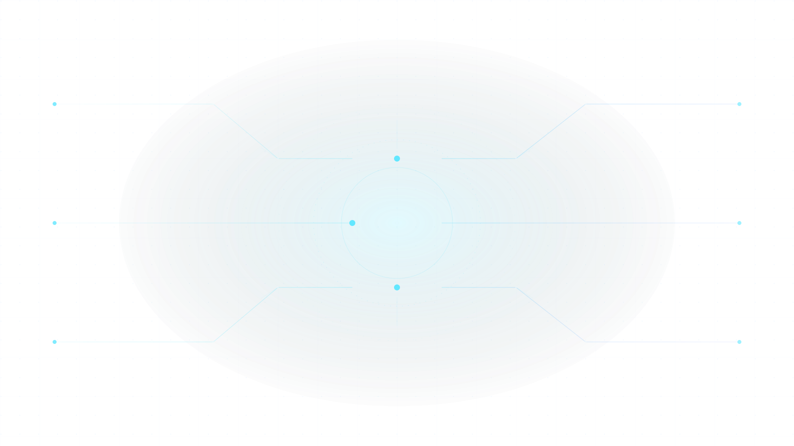

专业迁移度
先把你的已学课程和目标专业的考试科目对齐，找出已学、可补和硬缺口。
课程迁移评分DIRECTION FIT
DIRECTION SIGNAL / PRELIMINARY
先看电子信息与控制科学，纯计算机学硕放到冲刺位。
你的课程迁移路径更接近控制和信号处理，不是从零补计算机本科。下一步重点核验数学科目、复试加试和近三年录取名单。
THE DECISION RULE
热门专业并不等于适合你。研向把方向匹配、考试门槛、院校梯度和信息来源放在同一条判断链里，先排风险，再谈理想。
不把经验帖当事实，也不把热门当方向。每一块判断都能回到一个变量或一份来源。
先把你的已学课程和目标专业的考试科目对齐，找出已学、可补和硬缺口。
数学一、数学二和 396 不是同一套成本。先确认考试科目，再决定要不要换方向。
冲、稳、保不是平均分配。统考名额、推免占比和复试规则会改变一所学校的真实难度。
分数线、报录比、考试科目和复试规则，优先回到研招网与院校公告核对。
先把本科课程和目标专业的考试科目对齐，只做三件事：列课程、查科目、标出硬缺口。

研向不替你编造分数线。它把可确认的事实和需要继续核验的空白分开写清楚。
涉及招生人数、报录比、复试线和考试科目时，回答会带待核验标记。任何确定性承诺都不应该出现在考研决策里。
你给的信息越具体，判断越接近可执行。先问方向，再问院校，最后才是复习计划。
本科专业、数学基础、目标地区和每天能投入的时间。不要只输入我想考研。
不要只问一个专业是否热门，比较它的考试科目、迁移成本和院校供给。
把回答里的官方来源和待核验项拿去查专业目录、复试细则和录取名单。
不需要一次问对。先把问题缩小到两个可以比较的方向，再让院校和复习计划跟上。